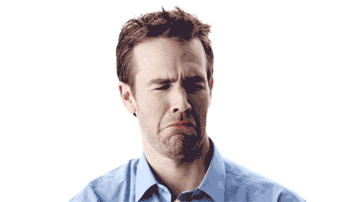

La enfermedad mental comprende una amplia gama de trastornos del pensamiento, las emociones y/o el comportamiento. Todas las personas experimentan pensamientos perturbadores o inusuales y emociones intensas. Y muchas personas se comportan de una manera que los demás consideran algunas veces extraña.